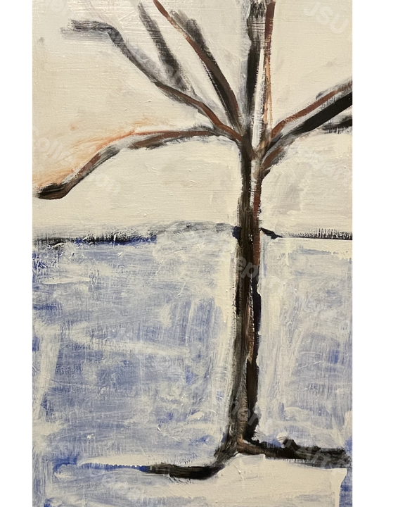

Object Record
Abstract Landscape
Anderson Macklin
A minimalistic winter landscape with a barren tree at the center. The subdued color palette and delicate brushstrokes create a tranquil and contemplative mood, emphasizing nature’s quiet beauty.
Catalog Note
Object context
This public-facing record is drawn from the working catalog and supporting collection files maintained for the Jackson State University Department of Art Permanent Collection.
Anderson Macklin, Abstract Landscape, n.d. Oil on canvas, 23.5 x 36 in.
Collection Description
Interpretive description
A minimalistic winter landscape with a barren tree at the center. The subdued color palette and delicate brushstrokes create a tranquil and contemplative mood, emphasizing nature’s quiet beauty.